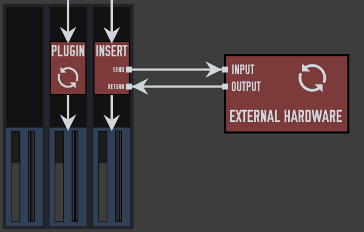

Updated: Mon, 2014-08-18 22:02
A low-pass filter (LPF) is a EQ filter that let's all low frequencies pass through unaffected, but cuts high frequencies. For this reason, it is also sometimes referred to as a high cut filter.
Most software EQ's will allow you to choose what frequency you want the filter to start at. Some will also allow you to configure the amount the frequency drops off below that point.
Updated: Mon, 2014-08-18 22:01
A high-pass filter (HPF) is a EQ filter that let's all high frequencies pass through unaffected, but cuts the low frequencies. For this reason, it is also sometimes referred to as a low cut filter.
On hardware mixers, a high pass filter set to a particular frequency is common. This most often is set at 75 Hz. Some hardware units and most software EQ's, however, will allow you to choose what frequency you want the filter to start at. Some will also allow you to configure the amount the frequency drops off below that point.
Updated: Wed, 2015-05-06 10:39
Inserts are found in both software and hardware mixers and allow external software and/or hardware to be inserted into the signal path. It does this through send and returns, where sends divert the channels signal to the device/software processor and the return takes the devices outgoing signal and routes it back into the signal path. In this way, you are effectively using an external device as a plugin.

Updated: Mon, 2014-08-18 22:04
Phase is the offset of two waveforms expressed in degrees, where 360 degrees corresponds to a delay of one cycle. Waveforms that are 180 degrees out of phase will cancel each other out to complete silence.
Phase problems can occur when two similar sound sources are out of alignment with each other. This causes the drop out of certain frequencies, which can make recordings sound thin if not dealt with.
Updated: Mon, 2014-08-18 21:58
In practice, convolution is being able to apply the sound of speaker cabinets or reverb from real spaces to a dry sound source. This is done by creating an impulse response. These are
captured by generating a known sound signal in an environment, eg. through a guitar speaker cabinet or in a large room. The difference between the dry signal and the recorded signal
is able to be calculated and used in a way that it can be applied to other dry sound sources. Eg. an impulse response captured in a church could be applied to a dry vocal recording to
Updated: Sat, 2014-08-16 18:50
Stems is parts of a song exported/bounced separately. So, a regular pop song in stems could for example contain one stem for guitars, one stem for the vocals, one for the drums, and so on. Stems are commonly used when mixing songs that are already arranged and ready, and just need the actual mixing done. It is also what a mixing engineer most likely will ask you for if you decide to have your song mixed professionally.
Updated: Wed, 2014-08-13 15:24
Post-fader means that something is active after the fader. This is most commonly used when talking about effects, plugins, sends and inserts. As the fader controls the volume of the channel or track, putting something before or after the fader can have drastic effects on the volume of said thing. A common use for putting something post-fader is when you apply effects to a track or channel.
Updated: Thu, 2014-11-13 16:57
Pre-fader means that something is active before the fader. This is most commonly used when talking about effects, plugins, sends and inserts. As the fader controls the volume of the channel or track, putting something before or after the fader can have drastic effects on the volume of said thing.
Most often, you put something pre-fader when you don't want it to be affected by changes in the track volume.
Updated: Tue, 2014-08-19 10:31
Modular set ups are where more than one program is used in a set up. JACK allows you to connect and sync various audio programs together so you can benefit from the strengths of individual applications. Session management can be used to manage and recall such complex set ups. A good suite of modular applications is the Non suite, which includes Non timeline, Non mixer and Non sequencer, although any JACK application can be incorporated into a modular set up.
Pages